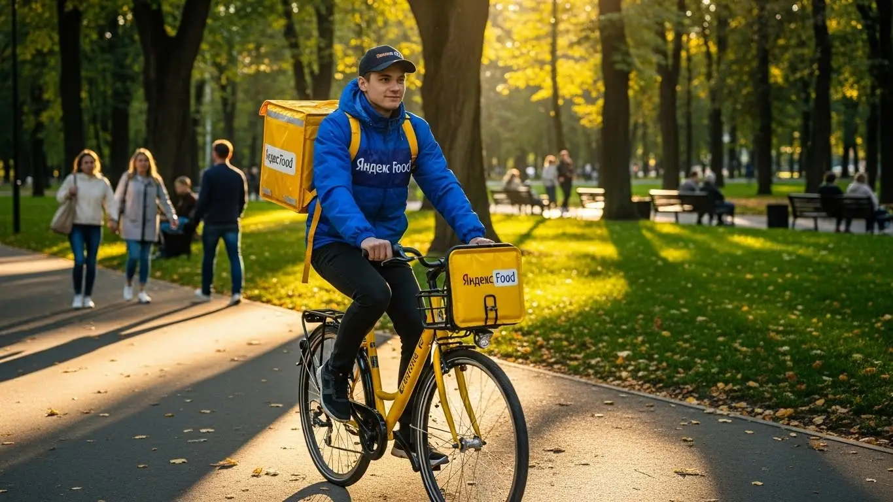

Доход курьера Яндекс Еды в Майкопе 2025-2026: разбор условий
- Работа курьером Яндекс Еды в Майкопе: для кого эта вакансия и что вы получите
- Сколько вы будете зарабатывать курьером в Майкопе: калькулятор дохода и разбор выплат
- Реальный заработок курьера в Майкопе: смены и месячный доход
- График работы и форматы занятости
- Требования к кандидату и документы
- Самозанятость, налоги и юридическая чистота
- Пошаговое оформление и первый выход на линию в Майкопе
- Пешком, на вело или на авто: что выгоднее в Майкопе
- Районы, маршруты и «топовые» зоны заказов в Майкопе
- Безопасность, страховка, штрафы и оплата простоя
- Плюсы и возможные минусы работы курьером в Майкопе
- Реальные истории и отзывы курьеров из Майкопе
- Ответы на главные вопросы о работе курьером Яндекс Еды в Майкопе
- Короткие ответы на главные вопросы
- Итоги: стоит ли работать курьером в Майкопе?
Все города
Думаешь взять жёлтую сумку и пойти в курьеры Яндекс Еды в Майкопе, но боишься, что заработок съедят бензин и штрафы, а велосипед «умрёт» на наших дорогах? Или что застрянешь в вечной пробке на Пролетарской в час пик, доставляя остывший заказ? Забудь рекламные обещания про «доход до 100 тысяч». Здесь — только реальный опыт и вся правда о том, как на самом деле устроена эта работа в нашем городе.
Поверь, 9 из 10 новичков в Майкопе сливаются в первый же месяц, потому что видят только верхушку айсберга. А под водой — расходы на связь, налог самозанятого, хитрый рейтинг, который решает, дадут ли тебе жирный заказ из центра или отправят в Черёмушки за копейки. Чтобы заранее оценить все условия, изучить ответы на частые вопросы и воспользоваться калькулятором дохода, загляни на официальную страницу про работу курьером Яндекс Еда в Майкопе. Не зная этих тонкостей, ты будешь просто нарезать круги, теряя время и деньги, пока другие ребята спокойно делают кассу.
В этом гиде мы честно разберём всё до винтика: посчитаем, сколько чистыми выходит в Майкопе на машине, велике и пешком; выясним, в каких районах больше всего заказов и в какое время лучше выходить на линию. Я покажу на примерах, за что реально штрафуют и как этого избежать, и сравним, выгоднее ли это, чем катать в других доставках нашего города.
Меня зовут Алексей. Я сам начинал с доставки пиццы на старенькой «девятке», а сейчас у меня свой небольшой таксопарк-партнёр. Я видел эту кухню со всех сторон и знаю каждый закоулок Майкопа. Так что никакой рекламной шелухи и обещаний золотых гор. Только факты, цифры и советы, которые помогут тебе с первого дня работать в плюс.
Чтобы тебе было проще сориентироваться во всех деталях, я подготовил короткий навигатор по статье.
Что ты точно узнаешь из этого разбора
В этой статье ты ТОЧНО узнаешь:
- Сколько реально можно заработать в Майкопе за смену и за месяц, если работать пешком, на велосипеде или авто?
- В каких районах Майкопа больше всего заказов и в какое время лучше выходить на смену, чтобы не кататься впустую?
- За что на самом деле штрафуют в Яндекс Еде и как не потерять рейтинг, от которого зависит количество заказов?
- Что выгоднее выбрать для Майкопа — доставку пешком, на велосипеде или на машине, и какие у каждого способа есть подводные камни?
- Как правильно оформить самозанятость за 10 минут и сколько налогов придётся платить с дохода?
А если тебе некогда читать всю статью — переходи сразу к заключению, где ты найдёшь короткие ответы на все эти вопросы и указания, в каких разделах искать подробности.
А для начала — ключевые цифры по работе курьером в Майкопе.
Работа курьером в Майкопе: ключевые цифры
Доход в час
350–500 ₽
В часы пик, с учетом бонусов и повышенных коэффициентов
Заработок за смену
2800–4000 ₽
Средний доход за 8-часовой слот на велосипеде или авто
Чаевые от клиентов
+10-15%
Дополнительно к доходу за вежливость и быструю доставку
Гибкий график
от 2 часов
Можно выбирать слоты и совмещать с учебой или другой работой
Работа курьером Яндекс Еды в Майкопе: для кого эта вакансия и что вы получите
Кому подойдёт эта работа в Майкопе
Давай начистоту: работа курьером — это не для всех, но для многих в Майкопе это отличный вариант. В первую очередь, это идеальная подработка для студентов. Свободный график можно подстроить под лекции, чтобы выходить на пару часов вечером после учёбы и иметь свои деньги на карманные расходы. Одно из главных преимуществ этой вакансии — для старта не требуется опыт, всему научат буквально за полчаса.
Также это хороший старт для тех, кто ищет работу без опыта или долго не был в деле. Здесь нет сложных собеседований и испытательных сроков. Если ты ответственный и пунктуальный, то уже через день-два сможешь получить первый доход.
Конечно, это выход и для тех, кому нужна именно подработка, а не основная занятость. Можно выходить только по выходным или пару раз в неделю, когда есть свободное время. Водители-курьеры на своих авто тоже находят здесь выгоду — можно совмещать с такси или просто выполнять заказы в удобное время. Всех этих людей объединяет потребность в гибком графике и быстрых, ежедневных выплатах.
Главные преимущества для жителей районов Черёмушки, Восход, Центр
Одно из главных удобств работы в сервисах Яндекса — возможность выполнять заказы рядом с домом. Тебе не нужно тратить час-полтора на дорогу до офиса и обратно. Живёшь, например, в Черёмушках — выбираешь в приложении «Яндекс Про» этот район и начинаешь смену прямо от своего подъезда. Заказы из местных кафе (Яндекс Еда) и магазинов (Яндекс Доставка) будут поступать тебе в первую очередь.
То же самое касается и других крупных жилых массивов. Если твой дом в районе Восход или в центральной части города, ты просто выходишь на линию в своей зоне. Это экономит не только время, но и деньги на проезд. А знание своего района, всех коротких путей и дворов даёт тебе преимущество в скорости. В итоге ты выполняешь больше заказов за то же время и, соответственно, больше зарабатываешь, не мотаясь через весь Майкоп.
Краткое обещание по доходу и условиям
Если говорить о деньгах, то в Майкопе цифры вполне реальные. При частичной занятости, выходя на 4–5 часов в день, можно спокойно заработать 1500–2000 рублей за смену. Если же рассматривать это как полную занятость и работать по 8–10 часов, то дневной заработок может доходить до 3500 рублей и выше, особенно если ты курьер на автомобиле и берёшь дальние заказы. В месяц при полной загрузке вполне реально выходить на зарплату в 50 000 – 70 000 рублей.
Самое важное — деньги ты получаешь практически сразу. Условия работы предусматривают ежедневные выплаты на твою банковскую карту, для этого нужно оформить статус самозанятого. Не нужно ждать аванса или зарплаты в конце месяца: отработал смену — получил деньги. При этом у тебя полностью свободный график. Для старта не нужно специальное образование — только смартфон, термокороб (его выдают партнёры сервиса) и желание работать.
Сколько вы будете зарабатывать курьером в Майкопе: калькулятор дохода и разбор выплат
Из чего складывается доход курьера
Твой заработок — это не просто фиксированная ставка. Он складывается из нескольких частей, и если понимать, как это работает, можно неплохо увеличить итоговую сумму. Во-первых, есть базовая оплата за каждый заказ — за подачу в ресторан или магазин и вручение клиенту. Во-вторых, к ней добавляется оплата за каждый километр пути: чем дальше везти, тем больше платят.
Кроме этого, есть повышающие коэффициенты. В часы пик, в плохую погоду или в выходные, когда заказов много, на карте в приложении «Яндекс Про» появляются зоны с повышенным спросом. Работая в них, можно умножить свой доход в 1,5, а то и в 2 раза. Не забывай про бонусы за выполнение определённого количества заказов и чаевые от клиентов — они полностью твои. И важный момент — оплата простоя. Если ты вышел на запланированный слот, а заказов мало, сервис всё равно начислит минимальную гарантированную сумму. Для курьеров на авто на дальних маршрутах также бывает компенсация проезда.
Как пользоваться калькулятором дохода
Чтобы прикинуть свой возможный заработок, не нужно гадать. На сайте есть специальный калькулятор. Пользоваться им просто: сначала выбери свой город — Майкоп — и тип доставки. Ты можешь быть пешим курьером, курьером на велосипеде или на своём автомобиле. От этого зависит средняя скорость и количество заказов, которые ты сможешь выполнить.
Далее укажи, сколько часов в день и сколько дней в неделю ты планируешь работать: например, 4 часа 5 дней в неделю как подработку или 8 часов 6 дней в неделю для полной занятости. На основе этих данных и средней статистики по Майкопу калькулятор покажет примерный диапазон твоего дневного и месячного дохода. Это не стопроцентная гарантия, но очень близкий к реальности ориентир, который поможет принять решение.
Прикинь свой доход курьера в Майкопе
Примерный доход в месяц
68 000 ₽
Доход за смену
3 400 ₽
Часов в месяц
~160
* Расчёт основан на средней ставке для Майкопа и не учитывает бонусы, чаевые и повышенные коэффициенты в часы пик. Твой реальный доход может быть выше.
Это поможет тебе сориентироваться, а чтобы увидеть самые актуальные условия и сразу подать заявку, загляни на страницу про работу курьером Яндекс Еда в твоём городе — там есть и калькулятор, и форма.
Примеры расчёта для пешего, вело- и авто‑курьера в Майкопе
Давай разберём на живых примерах, чтобы было понятнее.
- Пеший курьер-студент. Работает в центре Майкопа, в районе улиц Гоголя и Краснооктябрьской, где много кафе. Выходит на 4 часа по вечерам после пар, в среднем выполняет 2–3 заказа в час на короткие расстояния. Его заработок за смену составит примерно 900–1300 рублей. За неделю при пятидневке выходит 4500–6500 рублей — неплохая прибавка к стипендии.
- Велокурьер. Катается между спальными районами, например, из Черёмушек в Восход. Велосипед позволяет брать заказы на 3–5 км и выполнять их быстрее пешего курьера. Работает по 6–7 часов в выходные, и за счёт скорости и расстояния его доход за смену может достигать 1800–2400 рублей.
- Водитель-курьер на своем авто. Это самый доходный вариант. Он может работать по всему городу и брать заказы в пригород, например, в станицу Ханскую. Часто возит большие заказы из гипермаркетов в рамках Яндекс Доставки. Работает полную смену 8–10 часов, особенно активно в дождь, когда коэффициенты максимальные. Его дневной заработок в Майкопе может составлять от 3000 до 4500 рублей, что при стабильной работе выливается в очень достойную месячную зарплату.
Реальный заработок курьера в Майкопе: смены и месячный доход
Давай к главному вопросу, который всех волнует, — к деньгам. Никто не идёт в курьеры ради романтики, все хотят понимать, сколько можно заработать. Цифры в рекламе часто выглядят красиво, но я расскажу, как обстоят дела в Майкопе на самом деле, без прикрас. Заработок в Яндекс Еде — это не фиксированная зарплата, а результат твоей сноровки, графика и понимания, как работает система.
Диапазон дохода для подработки и полной занятости
Сразу разделим два формата: подработка для дополнительных расходов и полная занятость как основной источник дохода. Цифры я даю примерные, уже за вычетом налога — ведь работа курьером в Яндексе предполагает статус самозанятого. Личные траты вроде бензина или обеда здесь не учтены.
Для подработки (2–4 часа в день, обычно в вечерние пики):
- Пеший курьер: В центре, где много заказов на короткие расстояния, можно рассчитывать на 800–1300 рублей за смену. Идеально для студентов после пар.
- Велокурьер: За счёт скорости и возможности покрыть районы вроде Черёмушек и Восхода, доход за те же 3–4 часа будет уже 1000–1600 рублей.
- Автокурьер: Самый высокий потенциал. Вечером, когда много заказов из магазинов и дальних доставок, можно сделать 1500–2500 рублей. Но помни про расходы на топливо.
При полной занятости (8–10 часов в день, 5-6 дней в неделю) цифры за месяц получаются такие:
- Пеший: 25 000 – 35 000 рублей. Физически тяжело, но реально, если работать в зонах с плотной застройкой.
- Велокурьер: 35 000 – 50 000 рублей. Это, на мой взгляд, золотая середина для Майкопа по соотношению затрат и дохода.
- Автокурьер: 50 000 – 75 000 рублей и выше. Здесь доход сильно зависит от машины, её расхода и умения ловить дорогие заказы.
Как район, время суток и погода влияют на доход
Твой заработок — это не просто ставка за час. Он постоянно меняется, и на него влияют три главных фактора. Если их понять, будешь зарабатывать на 20–30% больше, чем тот, кто катается бездумно.
Во-первых, время. Самые «жирные» часы в Майкопе — обеденный пик с 12:00 до 14:00 и вечерний с 18:00 до 21:30. В это время люди массово заказывают еду, а в приложении «Яндекс Про» появляются зоны с повышенным спросом, окрашенные в фиолетовый цвет. Это значит, что к каждому заказу идёт повышающий коэффициент. Пятница вечер, суббота и воскресенье — практически один большой пик.
Во-вторых, погода. Для курьера дождь, сильная жара или первый снег — не проблема, а возможность. Большинство людей сидят дома и заказывают доставку, а многие курьеры, наоборот, не выходят на линию. Спрос резко растёт, предложение падает, и в итоге коэффициенты взлетают, а клиенты становятся щедрее на чаевые.
В-третьих, район. В центре, на улицах Краснооктябрьская и Пионерская, всегда много заказов из кафе и ресторанов. В спальных районах, таких как Черёмушки, пик спроса смещается на вечер и выходные, когда люди заказывают продукты из гипермаркетов. Понимание, где и когда будет спрос, — ключ к стабильному доходу.
Советы по увеличению заработка от опытных курьеров
Чтобы не просто работать, а именно зарабатывать, нужно подходить к делу с головой. Вот несколько проверенных советов, которые помогут выжимать максимум из каждой смены без лишних переработок.
Главное — планируй свои выходы. Заранее смотри в «Яндекс Про» и бронируй плановые слоты в зонах с высоким спросом, особенно на вечер пятницы и выходные. Это даёт приоритет в заказах и часто — гарантированную минимальную оплату, даже если заказов будет мало.
Не гоняйся за каждым «фиолетовым» пятном на карте. Если ты работаешь в центре, а высокий коэффициент появился на другом конце города, ты больше потратишь времени и денег на дорогу. Лучше досконально изучи один-два района: где какие рестораны, где срезать путь, где удобно парковаться. Эффективность в знакомой зоне всегда выше.
Используй свой транспорт с умом. Если у тебя есть машина, она идеальна для работы в плохую погоду, для выполнения дорогих заказов из гипермаркетов и для работы в выходные, когда можно охватить и пригород. Но в будний день в обеденный час пик в центре Майкопа выгоднее может оказаться велосипед или даже ноги — не будешь стоять в пробках и искать парковку.
Из практики: у меня парень в парке начинал на велосипеде, работал только в центре. Заметил, что вечером в его районе (Восход) постоянно горит высокий спрос. Стал брать слоты с 18:00 до 22:00 прямо у дома. В итоге стал делать на 1000–1200 рублей больше за смену, просто сменив локацию в нужное время. А в один дождливый субботний вечер он за 5 часов сделал почти 4000 рублей.
Сравнение форматов занятости в Майкопе
| Параметр | Подработка (2–4 часа/день) | Полная занятость (8–10 часов/день) |
|---|---|---|
| Средний дневной доход (пеший/вело) | 800 – 1600 ₽ | 1500 – 2500 ₽ |
| Средний дневной доход (авто) | 1500 – 2500 ₽ | 2500 – 4000+ ₽ |
| Примерный месячный доход | 15 000 – 30 000 ₽ | 40 000 – 75 000+ ₽ |
| Лучшее время | Вечерние часы (18:00-22:00), выходные | Обеденные и вечерние пики, полный день в выходные |
| Кому подходит | Студентам, людям с основной работой | Тем, для кого это основной источник дохода |
В итоге, твой реальный заработок в Майкопе напрямую зависит от твоего подхода. Можно бездумно кататься и получать средние деньги, а можно анализировать спрос, погоду и время, чтобы работать меньше, а зарабатывать больше. Новичкам без опыта советую начать с плановых слотов в своём районе в вечернее время — так вы быстрее поймёте механику и не перегорите в первые же дни.
График работы и форматы занятости
Одно из главных преимуществ работы курьером — свободный график. Ты сам решаешь, когда и сколько работать. Нет начальника, который стоит над душой, нет строгого расписания с 9 до 6. Это идеальный вариант для тех, кто хочет совмещать доставку с учёбой, другой работой или просто ценит свою свободу. Но чтобы эта свобода приносила деньги, её тоже нужно правильно организовать.
Подработка после учёбы или основной работы
Совмещать доставку с чем-то ещё — самый популярный сценарий. Это отличный способ получить дополнительные деньги, не меняя кардинально свою жизнь. Вот пара реальных примеров, как это работает в Майкопе.
Пример первый: студент МГТУ. Учёба заканчивается в 15-16 часов. Он приходит домой, отдыхает, делает дела, а в 18:30 выходит на 4-часовой слот на велосипеде. Работает в центре и в прилегающих районах, где много общежитий и кафе. За вечер спокойно делает 1200–1500 рублей. В месяц выходит 20-25 тысяч, которых с головой хватает на личные расходы и развлечения, при этом учёба не страдает.
Пример второй: мужчина, работает в офисе до шести вечера. У него есть своя машина. Он не работает каждый день, а выходит на линию только в «хлебные» дни: вечер пятницы, всю субботу и половину воскресенья. Берёт заказы из крупных магазинов, возит их по всему городу и в ближайшие станицы. Такая подработка на выходных приносит ему дополнительные 12–18 тысяч в месяц, которые он тратит на семью или хобби.

Полная занятость: как выглядит типичный день курьера
Если ты рассматриваешь доставку как основную работу, твой день будет строиться вокруг пиков спроса. Просто кататься 8 часов подряд — неэффективно. Грамотный курьер работает интенсивно в пики и отдыхает в затишье.
Типичный день автокурьера в Майкопе выглядит так. Он выходит на линию около 10:00, начинает с неспешных утренних заказов — кофе, документы по тарифу Яндекс Доставки. К 11:30 перемещается в центр, в район улиц Гоголя и Пушкина, где к обеду «просыпаются» офисы и рестораны. С 12:00 до 14:30 — самый интенсив, заказы идут один за другим.
После 15:00 наступает затишье. Это время для обеда, заправки или просто отдыха. Можно взять один-два дальних заказа, чтобы не стоять на месте.
К 17:30 курьер снова в строю и смещается в сторону спальных районов, например, Черёмушек. С 18:00 до 21:00 — второй, самый прибыльный пик. Люди возвращаются с работы, заказывают ужины и продукты. После 21:30 спрос падает, можно сделать ещё пару заказов и к 22:00 заканчивать смену. Такой рваный график с перерывами позволяет и хорошо заработать, и не вымотаться к концу дня.
Как планировать слоты и выходы через приложение «Яндекс Про»
Твой главный инструмент — это приложение «Яндекс Про». Именно через него ты управляешь своим графиком. Есть два основных режима: свободный выход и плановые слоты. Новичкам я настоятельно рекомендую начинать со слотов.
Плановый слот — это отрезок времени (от 2 до 12 часов), который ты заранее бронируешь в определённом районе города. Зайдя в приложение, ты увидишь карту Майкопа, разделённую на зоны, и расписание доступных слотов. Выбираешь удобное время и район, подтверждаешь — и всё, смена запланирована. Это даёт тебе приоритет при распределении заказов и часто — минимальную гарантированную сумму дохода за этот слот.
Критически важно не опаздывать на начало слота. Если ты забронировал смену с 18:00, то в 17:55 ты уже должен быть в своей зоне и нажать кнопку «На линии». Опоздания или ранняя отмена слота негативно влияют на твой рейтинг Активности. А высокий рейтинг — это доступ к большему количеству заказов, бонусам и лучшим слотам в будущем. Поэтому относись к этому серьёзно: планирование — основа стабильного дохода.
Был у меня случай: парень сначала работал только на свободном выходе, когда есть настроение. Заработки скакали: то густо, то пусто. Я ему посоветовал попробовать забронировать слоты на неделю вперёд в одно и то же вечернее время. Уже через неделю он пришёл и сказал, что доход вырос процентов на 30 и, главное, стал предсказуемым. Система видит его как надёжного исполнителя и даёт больше заказов.
В общем, свободный график — это не анархия. Чтобы он работал на тебя, используй «Яндекс Про» для планирования. Бронируй выгодные слоты, выходи на линию вовремя, и твой доход будет стабильным. Такие условия работы курьером в Яндексе делают этот вариант отличной подработкой или даже основной занятостью.
Требования к кандидату и документы
Многих пугают строгие требования и бумажная волокита. Сразу скажу: в Яндекс Еде условия работы проще. Никто не потребует диплом о высшем образовании или опыт — начать можно с нуля. Главное — быть ответственным и готовым двигаться. Давай по порядку разберём, что от тебя потребуется на самом деле.
Возраст, гражданство и базовые условия
Начнём с основ. Чтобы стать курьером в Яндекс Еде, тебе должно быть полных 18 лет. Это строгое правило, связанное с материальной ответственностью и необходимостью оформить самозанятость. По гражданству тоже всё чётко: принимают граждан Российской Федерации и стран ЕАЭС (Беларусь, Казахстан, Армения, Киргизия).
Что касается физической формы, никаких нормативов ГТО сдавать не придётся. Но ты должен трезво оценивать свои силы. Если идёшь в пешие курьеры, будь готов много ходить, в том числе по лестницам. Для велокурьера важна выносливость, особенно если в Майкопе придётся крутить педали в горку. А курьеру на автомобиле, само собой, нужно уверенно чувствовать себя за рулём и хорошо ориентироваться в городе. Главное — отсутствие медицинских противопоказаний к физическим нагрузкам.
Какие документы нужны для работы курьером
Список документов для оформления минимальный, и скорее всего, всё необходимое у тебя уже под рукой. Подготовь их заранее, чтобы не терять время.
Вот что понадобится:
- Паспорт. Основной документ для подтверждения твоей личности и возраста. Нужен будет оригинал для регистрации.
- ИНН (Идентификационный номер налогоплательщика). Он необходим для оформления самозанятости и уплаты налогов. Если не помнишь свой номер, его можно за пару минут бесплатно узнать на сайте ФНС.
- Банковская карта. Подойдёт карта любого российского банка, оформленная на твоё имя. На неё будут приходить все выплаты — твой заработок.
- Медицинская книжка. Так как ты будешь работать с доставкой еды, медкнижка часто является обязательным условием. Если её нет, будь готов оформить. В Майкопе это можно сделать в поликлинике или частном медцентре с лицензией. Советую заняться этим заранее, чтобы сразу получить доступ к заказам из ресторанов.
Как видишь, ничего сверхъестественного. Это стандартные требования для любого официального оформления.
Можно ли работать с 16 лет и какие есть альтернативы
Часто спрашивают, берут ли в Яндекс Еду с 16 или 17 лет. Отвечаю честно: нет, не берут. Минимальный возраст для регистрации в сервисе — 18 лет. Это связано с тем, что работа предполагает полную материальную ответственность, а также требует обязательного оформления статуса самозанятого, который в полной мере доступен с совершеннолетия.
Какие есть варианты для подростков, которые ищут подработку? В Майкопе можно поискать другие форматы. Например, раздача листовок, работа промоутером на акциях в торговых центрах, помощь в небольших кафе или магазинах. Это, конечно, не так технологично и гибко, как работа курьером через приложение, но для получения первого опыта и карманных денег — вполне рабочий вариант. А как исполнится 18 — добро пожаловать в доставку.
Был у меня парень, который очень хотел работать курьером, пришёл в 17 лет. Я объяснил ему ситуацию. Он не растерялся, устроился на лето помощником в шиномонтажку, подкопил денег. А ровно в день своего 18-летия заполнил анкету в Яндекс Еду и уже на следующий день вышел на свой первый слот.
Как видишь, условия работы курьером вполне реальные. Ключевые требования — возраст от 18 лет, гражданство РФ или ЕАЭС и базовый набор документов. Советую заранее проверить ИНН и заняться медкнижкой, чтобы быстрее начать получать заказы и первые выплаты.
Самозанятость, налоги и юридическая чистота
Многих новичков пугают слова «самозанятость» и «налоги». Кажется, что это сложно и дорого. На деле всё наоборот. Статус самозанятого (или плательщика налога на профессиональный доход, НПД) создан специально для того, чтобы курьеры и фрилансеры могли работать легально, просто и с минимальной налоговой ставкой. Это самый прозрачный и безопасный способ сотрудничества с таким сервисом, как Яндекс Еда.
Почему курьеры Яндекс Еды работают как самозанятые
Сотрудничество через самозанятость — это не прихоть Яндекса, а самый удобный формат для обеих сторон. Ты не штатный сотрудник, а независимый партнёр, который сам решает, когда и сколько ему работать. Самозанятость идеально подходит под такой свободный график.
Главные плюсы для тебя:
- Официальный доход. Все твои заработки — «белые». Ты можешь спокойно взять кредит или подтвердить доход для любых других целей.
- Простота. Никакой бухгалтерии, деклараций и походов в налоговую. Всё происходит автоматически через приложение.
- Легальность. Ты работаешь в рамках закона, платишь небольшой налог и спишь спокойно, не боясь проверок и штрафов.
- Прямые выплаты. Деньги за выполненные заказы поступают напрямую от Яндекса на твою карту, без посредников.
По сути, это даёт тебе свободу фрилансера, но с официальным статусом и гарантиями.
Как за 10 минут оформить самозанятость через «Мой налог»
Регистрация занимает не больше 10–15 минут, и для этого даже не нужно вставать с дивана. Всё делается через официальное приложение ФНС «Мой налог».
Вот простая пошаговая инструкция:
- Скачай приложение «Мой налог» в Google Play или App Store. Оно бесплатное и официальное.
- Открой приложение и выбери способ регистрации. Самый быстрый — «По паспорту РФ».
- Отсканируй главный разворот паспорта камерой телефона. Приложение само распознает данные.
- Подтверди свою личность, сделав селфи. Система сравнит его с фотографией в паспорте.
- Выбери регион ведения деятельности — например, Республика Адыгея, если планируешь работать в Майкопе.
- Подтверди регистрацию. Вот и всё, ты официально стал самозанятым.
Никаких заявлений, очередей и госпошлин. После этого останется привязать свой статус в приложении для курьеров «Яндекс Про», и система будет делать всё за тебя.
Сколько и как платить налоги
Теперь о самом главном — о деньгах. Ставка налога для самозанятого — одна из самых низких в стране. Когда ты получаешь доход от юридического лица, такого как Яндекс, ты платишь 6% от этой суммы. Если бы ты выполнял заказ для частного лица, ставка была бы 4%, но с сервисом работаем по ставке 6%.
Процесс уплаты налога полностью автоматизирован и не требует от тебя никаких усилий. Вот как это работает:
- Яндекс сам передаёт данные о твоём доходе в налоговую службу.
- Приложение «Мой налог» автоматически рассчитывает сумму налога за прошедший месяц.
- До 12-го числа следующего месяца тебе приходит уведомление с итоговой суммой.
- Ты просто нажимаешь кнопку «Оплатить» в приложении и платишь с привязанной карты.
Это гораздо проще и безопаснее, чем работать неофициально. Во-первых, ты защищён законом. Во-вторых, у тебя есть подтверждённый доход. В-третьих, 6% — это небольшая плата за спокойствие и официальный статус.
Один из моих водителей-курьеров долго боялся этой самозанятости. Я сел с ним, и мы вместе за 10 минут его зарегистрировали. Когда в следующем месяце ему пришёл налог — около 1500 рублей с его подработки — он был удивлён. Сказал, что на сигареты и кофе в месяц тратит больше и что зря боялся.
Итог простой: самозанятость — это не страшно, а удобно. Это обязательное условие для работы курьером в Яндекс Еде, которое делает твой доход официальным и защищает тебя по закону. Не ищи «серых» схем — оформление занимает 10 минут и экономит нервы и деньги в будущем.
Пошаговое оформление и первый выход на линию в Майкопе
Многие думают, что устроиться курьером — это долго и муторно, с кучей бумажек и собеседований. На деле, если нужна хорошая подработка без опыта, всё гораздо проще и быстрее. Особенно если ты уже подготовил документы, о которых я рассказывал раньше. Весь процесс от заявки до первого заработка в сервисах Яндекса может занять меньше дня. Главное — не тушеваться и просто следовать шагам в приложении.
Вся система построена так, чтобы убрать лишнюю бюрократию. Никто не будет гонять тебя по офисам ради одной подписи. Анкета заполняется онлайн, обучение — тоже. Это не экзамен в вузе, а короткий инструктаж, чтобы ты понимал базовые правила сервиса и безопасности. Система проверяет твои данные, и если всё в порядке, ты почти сразу готов к работе.
Из практики: у меня был парень, который решил попробовать себя в доставке. Утром в 10:00 он заполнил анкету на сайте, пока пил кофе. К обеду прошёл онлайн-обучение и тесты, а после обеда уже договорился с партнёром о получении термосумки. Вечером того же дня он вышел на свой первый двухчасовой слот в районе Черёмушек и заработал первые 700 рублей, которые сразу же отобразились на его балансе в приложении. Он был удивлён, насколько всё быстро и без лишних сложностей.
В общем, барьер «сложно устроиться» — это скорее миф. Весь процесс максимально автоматизирован и рассчитан на то, чтобы ты мог начать зарабатывать как можно скорее. Главный совет: перед заполнением анкеты просто собери в одну папку на телефоне фото паспорта и ИНН, чтобы не искать их в последний момент. Это сэкономит тебе ещё полчаса.
Шаг 1–2: анкета и онлайн‑обучение
Первый шаг — это заполнение простой анкеты на сайте. Понадобятся базовые данные: ФИО, номер телефона, гражданство и город — Майкоп. После этого тебе предложат скачать приложение «Яндекс Про» — это твой главный рабочий инструмент, через него идёт вся работа.
Как только ты войдёшь в приложение, система предложит пройти короткое онлайн-обучение. Это несколько видеороликов и небольшие тесты. Темы там самые важные: как правильно общаться с клиентами и сотрудниками ресторанов, как обращаться с едой, чтобы она доехала в целости, и базовые правила безопасности на дороге. Не переживай, это несложно, большинство проходит всё с первого раза за 20–30 минут. Главное — внимательно слушать, эта информация реально пригодится на линии.
Шаг 3: получение сумки и доступа к заказам в Майкопе
После успешного прохождения обучения тебе нужно будет получить главный атрибут курьера — фирменную термосумку или термокороб. Без этой экипировки система не даст доступ к заказам из ресторанов и магазинов в Яндекс Еде, так как важно сохранять температуру блюд. В Майкопе есть несколько способов её получить: через курьерский центр или офис партнёра-таксопарка.
Точные адреса и время работы этих точек ты увидишь прямо в приложении «Яндекс Про» после завершения обучения. В некоторых случаях партнёры могут даже предложить доставку экипировки на дом. Сумку обычно выдают в пользование, покупать её не нужно. Как только ты получишь её и активируешь в приложении (обычно это делается простым фотографированием), тебе откроется доступ к заказам.
Шаг 4: первый слот и первый доход
Итак, сумка у тебя, приложение активно — пора зарабатывать. Заходишь в «Яндекс Про», открываешь расписание и выбираешь свой первый слот. Слот — это временной интервал, в который ты планируешь доставлять заказы. Это и есть основа свободного графика: работаешь, когда удобно, например, с 18:00 до 22:00. Для начала советую выбрать короткий слот на 2–3 часа в знакомом тебе районе Майкопа, чтобы освоиться без спешки.
Выбрав слот, ты выходишь на линию — нажимаешь кнопку «Начать» в приложении. Система начнёт предлагать тебе заказы поблизости. Принимаешь первый, едешь в ресторан, забираешь пакет, отвозишь клиенту. Всё, первая доставка выполнена! Деньги сразу появятся на твоём балансе в приложении. Одно из главных преимуществ работы курьером в Яндексе — это ежедневные выплаты. Большинство новичков получают свой первый доход в тот же день, когда получили сумку, или на следующий.
Пешком, на вело или на авто: что выгоднее в Майкопе
Выбор транспорта — одно из ключевых решений, которое напрямую влияет на твой потенциальный доход и комфорт работы. В Майкопе, как и в любом другом городе, у каждого способа передвижения есть свои плюсы и минусы. Пеший курьер хорош в центре, где всё рядом, но много не унесёшь. Велосипедист мобильнее и быстрее, а водитель на авто может брать самые дорогие и дальние заказы, но у него есть расходы на бензин, влияющие на итоговую зарплату.
Важно трезво оценить свои возможности и особенности города. Майкоп не мегаполис, но и здесь есть свои пробки, особенно в центре на улицах Гоголя или Пионерской в час пик. Рельеф в основном равнинный, что хорошо для велосипедистов. Спальные районы вроде Черёмушек или Восхода довольно обширные, пешком их не покроешь, а вот на велосипеде или авто — легко. Поэтому перед выбором подумай, где ты планируешь работать и какой стиль тебе ближе.
Один мой знакомый начинал как пеший курьер в центре. За 4-часовой слот он делал 5-6 заказов и зарабатывал около 1000-1200 рублей. Потом он пересел на старенький велосипед и начал брать слоты в районе Восхода. За те же 4 часа он стал успевать делать 8-10 заказов, потому что сократил время в пути между точками. Его доход вырос до 1500-1800 рублей за смену. Расходов почти не добавилось, а заработок увеличился почти в полтора раза.
Сравнение форматов доставки в Майкопе
| Параметр | Пеший курьер | Велокурьер | Водитель-курьер |
|---|---|---|---|
| Зоны работы | Центр, плотная застройка (ул. Краснооктябрьская, Пролетарская) | Центр и спальные районы (Черёмушки, Восход) | Весь город и пригороды (пос. Тульский, ст. Ханская) |
| Средний доход | Низкий-средний | Средний-высокий | Высокий |
| Расходы | Минимальные (удобная обувь) | Низкие (обслуживание велосипеда) | Высокие (бензин, амортизация авто) |
| Плюсы | Нет расходов на транспорт, фитнес, можно работать в зонах с пробками | Скорость, маневренность, нет пробок, оплачиваемый фитнес | Комфорт в плохую погоду, самые дорогие и дальние заказы, можно брать несколько заказов сразу |
| Минусы | Низкая скорость, усталость, зависимость от погоды, малый радиус | Физическая нагрузка, зависимость от погоды, нужен велосипед | Расходы на топливо, пробки, проблемы с парковкой в центре |
В итоге, нет одного «правильного» ответа, что лучше. Выбор зависит от твоих целей. Если нужна простая подработка и ты живёшь в центре — начинай пешком. Если хочешь зарабатывать больше и любишь активность — велосипед твой лучший друг. А если есть машина и ты готов работать по всему городу и в любую погоду — автокурьер заработает больше всех. Мой совет: начни с того, что у тебя уже есть, а дальше посмотришь по ситуации и, возможно, сменишь формат.
Пеший курьер: для центра и плотной застройки в Майкопе
Работа пешком — идеальный вариант для старта, если у тебя нет велосипеда или машины. Этот формат особенно выгоден в центральной части города, где много заказов от Яндекс Еды. Здесь на небольшом пятачке сосредоточено огромное количество кафе, ресторанов и магазинов. Расстояния между точками А (ресторан) и Б (клиент) часто не превышают 1-2 километров, которые легко пройти за 10-15 минут.
Представь себе район вокруг Городского парка, улицы Краснооктябрьская, Пролетарская, Гоголя. Здесь постоянное движение, узкие улицы и вечные проблемы с парковкой. Пока водитель ищет, где встать, ты уже забрал заказ и идёшь к клиенту. Плотная застройка и короткие дистанции позволяют делать много заказов за короткое время, не тратя деньги на проезд или бензин. Это отличный вариант для студентов или тех, кто ищет подработку на несколько часов в день.
Велокурьер: быстрые доставки между спальными районами
Велосипед даёт тебе как велокурьеру суперспособность — скорость и маневренность. Ты не зависишь от пробок, можешь срезать путь через дворы и парки. В Майкопе это особенно актуально для работы между крупными спальными районами, такими как Черёмушки и Восход. Расстояния там уже не пешие, а на машине можно застрять на светофорах. Велосипед же позволяет быстро перемещаться между заказами, увеличивая их количество в час.
Кроме очевидной выгоды в скорости, это ещё и отличный способ поддерживать себя в форме. Многие ребята называют это «оплачиваемым фитнесом». Ты крутишь педали, дышишь воздухом и при этом зарабатываешь. Велосипед не требует больших вложений, а его обслуживание стоит копейки по сравнению с автомобилем. Если у тебя есть велосипед и ты не боишься физической нагрузки — это, пожалуй, самый сбалансированный и выгодный вариант для Майкопа.
Водитель‑курьер: заказы по всему городу и пригороду посёлок Тульский, станица Ханская
Работа курьером на своем авто открывает доступ к самым выгодным заказам. Это могут быть как доставки из Яндекс Лавки, так и более габаритные посылки в рамках Яндекс Доставки в отдалённые районы города и в пригороды Майкопа, например, в посёлок Тульский или станицу Ханская. Такие заказы всегда оплачиваются выше из-за большого расстояния. Кроме того, на машине можно выполнять несколько заказов одновременно, если они находятся по пути.
Автомобиль — это твой главный козырь в плохую погоду. Когда идёт дождь или стоит сильная жара, количество заказов резко возрастает, а число курьеров на линии падает. В это время действуют повышенные коэффициенты, и водитель-курьер может заработать за несколько часов столько же, сколько пеший за целый день. Да, есть расходы на бензин и амортизацию, но при грамотном подходе и выборе «жирных» заказов они с лихвой окупаются.
Районы, маршруты и «топовые» зоны заказов в Майкопе
Чтобы работа курьером в Яндекс Еде приносила хороший доход, а не превращалась в хаотичное катание по городу, нужно понимать, где и когда концентрируются заказы. Майкоп — город компактный, но и здесь есть свои «рыбные места» и часы пик. Знание этих зон — твой главный инструмент для увеличения заработка, особенно если ты работаешь на своем авто и каждый литр бензина на счету.
Где больше всего заказов: ТРЦ, бизнес‑центры и туристические места
Самые денежные зоны, где почти всегда горит повышенный спрос, — это, конечно, центр города. В первую очередь ориентируйся на крупные торговые центры, такие как ТРЦ «Столица» на улице Калинина и ТРЦ «Галерея» на Краснооктябрьской. Вокруг них сосредоточено огромное количество кафе, ресторанов и магазинов, которые генерируют постоянный поток заказов, особенно в обеденное время (с 12:00 до 15:00) и по вечерам (с 18:00 до 21:00).
Кроме того, весь деловой центр вдоль улиц Пролетарской и Краснооктябрьской — это зона стабильно высокого спроса. Здесь много офисов, сотрудники которых заказывают бизнес-ланчи, а также проходят туристические маршруты. В приложении «Яндекс Про» эти зоны часто подсвечиваются фиолетовым цветом, что означает максимальные повышающие коэффициенты. Работать здесь выгодно, но будь готов к сложностям с парковкой, если ты курьер на автомобиле. Для велокурьера, наоборот, центр может быть очень удобен.
Работа в своём районе: примеры для популярных жилых кварталов
Не обязательно каждый раз ехать в центр, чтобы хорошо заработать. Отличная стратегия, особенно для новичков или тех, кто ищет подработку, — работать в своём спальном районе. Например, в Черёмушках или в районе Восхода полно заказов из продуктовых магазинов, местных пиццерий, суши-баров и аптек. Плотность заказов здесь может быть чуть ниже, чем в центре, но зато и конкуренция меньше, а маршруты знакомы до каждого двора.
Работая рядом с домом, ты экономишь время и деньги на дорогу до стартовой точки слота. Заказы в спальных районах часто идут один за другим: отвёз продукты из «Магнита», тут же получил заказ из соседней аптеки. Это позволяет выполнять больше доставок в час без лишней суеты и стресса, связанных с трафиком в центре города.
Как выбирать зоны и слоты в «Яндекс Про», чтобы не мотаться впустую
Приложение «Яндекс Про» — твой главный штурман. Основной инструмент в нём — это карта спроса. Она в реальном времени показывает, где сейчас больше всего заказов, с помощью цветовой шкалы: от зелёного (спрос обычный) до красного и фиолетового (спрос очень высокий, действуют надбавки). Перед началом смены всегда смотри на эту карту и старайся начинать работу в «горячей» зоне или рядом с ней.
Планируй свои слоты заранее, выбирая пиковые часы: обеденное время, вечерние часы после 18:00 и, конечно, выходные дни. Когда ты находишься в зоне высокого спроса, система с большей вероятностью будет давать тебе «цепочку заказов» — то есть следующий заказ назначается ещё до того, как ты завершил текущий. Это исключает простой и позволяет зарабатывать непрерывно, не тратя время и топливо на пустые переезды в поисках следующей доставки.
Из практики: один мой знакомый водитель-курьер поначалу брал длинные 10-часовые смены и катался по всему Майкопу, сжигая много бензина. За смену выходило около 2500–3000 рублей. Я ему посоветовал сменить тактику: брать два коротких слота по 4 часа, но строго в пиковое время. Один с 11:00 до 15:00 в районе ТРЦ «Столица», второй — с 18:00 до 22:00 в Черёмушках. В итоге за те же 8 часов его доход вырос до 3500–4000 рублей, а пробег сократился почти на треть.
Сравнение зон для работы в Майкопе
| Параметр | Центр (ТРЦ, деловые кварталы) | Спальные районы (Черёмушки, Восход) |
|---|---|---|
| Плотность заказов | Очень высокая в пиковые часы (обед, вечер) | Стабильная, равномерная в течение дня |
| Средний чек заказа | Выше (рестораны, крупные магазины) | Средний (продукты, фастфуд, аптеки) |
| Повышающие коэффициенты | Часто, особенно в плохую погоду и праздники | Реже, в основном в вечерние часы |
| Сложность парковки (для авто) | Высокая, много времени на поиск места | Низкая, всегда есть место во дворах |
| Рекомендация | Идеально для быстрого заработка на коротких слотах | Отлично для спокойной работы на длинных сменах рядом с домом |
В общем, ключ к успеху — это не просто много работать, а работать с умом. Анализируй карту в приложении, сочетай работу в центре в пиковые часы с доставками в своём районе в более спокойное время. Так ты сможешь максимизировать свой доход и минимизировать расходы.
Безопасность, страховка, штрафы и оплата простоя
Работа курьера в Яндекс Еде, как и любая другая, связана с определёнными правилами и рисками. Важно понимать, что ты не остаёшься один на один с возможными проблемами. В сервисе есть чёткая система поддержки, которая включает бесплатное страхование, а также понятные правила, которые защищают и твой доход, и твоё здоровье. Главное — знать эти правила и действовать по инструкции.
Бесплатная страховка на сменах и что она покрывает
Один из самых важных моментов, о котором многие новички даже не знают, — это бесплатная страховка жизни и здоровья. Она автоматически активируется, как только ты выходишь на активный слот, и действует до его завершения. Тебе не нужно ничего дополнительно оформлять или платить — сервис уже позаботился об этом.
Страховка покрывает несчастные случаи, которые могут произойти во время доставки. Например, если ты, будучи велокурьером, упал и сломал руку, или, работая на авто, попал в ДТП. Сумма покрытия доходит до 2 миллионов рублей и может компенсировать расходы на лечение. Это серьёзная поддержка, которая даёт уверенность, что в сложной ситуации ты не останешься без помощи.
Правила безопасности на дороге и при доставке
Банальные вещи, но о них нужно помнить всегда. Для пешего курьера главное — внимательность: смотри по сторонам, переходи дорогу только по пешеходному переходу, будь осторожен во дворах, откуда внезапно может выехать машина. Для велокурьера — обязательно используй шлем и фонари в тёмное время суток, двигайся предсказуемо и уважай других участников движения.
Если ты водитель-курьер, не гоняй, даже если опаздываешь. Лучше позвонить клиенту и предупредить о задержке, чем рисковать аварией. Всегда аккуратно паркуйся, чтобы не мешать другим. В плохую погоду — дождь, гололёд — снижай скорость вдвое. И общее правило для всех: бережно относись к заказу. Проверяй в термокоробе, чтобы напитки были плотно закрыты, а горячее не лежало рядом с холодным.
Какие бывают штрафы и как их избежать
Система не любит тех, кто подводит клиентов и партнёров. Штрафы или снижение рейтинга (что напрямую влияет на количество заказов) можно получить за несколько вещей: регулярные опоздания на запланированные слоты, порчу заказа, грубость в адрес клиента или сотрудников ресторана, а также за отмену уже принятого заказа без веской причины.
Избежать этого просто: будь профессионалом. Выходи на слот за 5–10 минут до его начала. Если понимаешь, что опаздываешь с доставкой из-за пробки или долгого ожидания в ресторане, свяжись с поддержкой через приложение — они помогут и предупредят клиента. Аккуратно обращайся с термосумкой, чтобы ничего не пролилось и не помялось. И, конечно, всегда будь вежлив. Спокойное и адекватное поведение — залог отсутствия проблем.
Что такое оплата простоя и как она защищает ваш доход
Это одно из ключевых преимуществ работы с Яндексом, которое многие недооценивают. «Оплата простоя» — это, по сути, гарантия минимального заработка. Она включается, если ты находишься на плановом слоте в указанной зоне, готов принимать заказы, но их по какой-то причине нет. В этом случае сервис начисляет тебе деньги просто за то, что ты находишься на линии.
Этот механизм защищает твой доход от ситуаций, когда в городе аномально низкий спрос. В отличие от многих других сервисов, где «нет заказов — нет денег», здесь ты можешь быть уверен, что твоё время будет оплачено. Это делает заработок более стабильным и предсказуемым, особенно когда ты только начинаешь и ещё не до конца изучил самые активные зоны и часы.
Как-то раз один из моих курьеров, пеший парень-студент, попал под сильный ливень в начале смены. Он промок, заказ тоже пострадал. Парень расстроился, думал, что день потерян, ещё и штраф получит. Он сразу написал в поддержку, объяснил ситуацию. В итоге заказ списали без штрафа, а так как он был на слоте, ему посоветовали переждать дождь в ближайшем кафе. За то время, что он ждал, ему даже начислили небольшую сумму за простой. Это хороший пример того, как поддержка и страховые механизмы работают на практике.
Итак, главное — работать ответственно и не бояться обращаться в поддержку. Система создана так, чтобы защитить добросовестного курьера. Соблюдай правила безопасности, будь вежлив, и тогда твоя работа будет стабильной и без неприятных сюрпризов.
Плюсы и возможные минусы работы курьером в Майкопе
Сильные стороны работы курьером в Майкопе
Давай по-честному разберём, что хорошего в этой работе, без рекламной шелухи. Во-первых, это реальная свобода и свободный график. Ты сам решаешь, когда выходить на линию — утром, вечером или только по выходным. Никто не стоит над душой с расписанием с девяти до шести. Это идеальный вариант для подработки, если у тебя есть другие дела, например, учёба.
Во-вторых, деньги. В сервисах Яндекса ты получаешь ежедневные выплаты: отработал смену — получил деньги на карту. Не нужно ждать зарплаты месяц, можно сразу покрывать свои расходы. Кроме того, ты работаешь как самозанятый. Это значит, что твой доход официальный, всё чисто и по закону, а налог платится элементарно через приложение. И не забывай про поддержку: на смене действует страховка, так что ты не остаёшься один на один с проблемами, если что-то случится на дороге.
С какими сложностями чаще всего сталкиваются курьеры
Теперь о минусах, они тоже есть. Главное — это работа на ногах или на колёсах. Физическая нагрузка будет, особенно у пеших курьеров и велокурьеров. Если ты не привык много двигаться, первое время может быть тяжело. Плюс, погода в Майкопе бывает разной: и летний зной, и осенние дожди. Работать в ливень — то ещё удовольствие, но тут есть и плюс: в плохую погоду всегда включают повышенные коэффициенты, и заработать можно больше. Главное — иметь хорошую непромокаемую одежду.
Иногда бывают простои, когда заказов мало. Такое случается в определённые часы, например, после обеда в будний день. Чтобы не сидеть без дела, учись выбирать «рыбные» зоны с высоким спросом, которые подсвечиваются в приложении Яндекс Про. Ну и последнее — клиенты. Люди бывают разные, не все вежливые. Мой совет: сохраняй спокойствие, делай свою работу и в спорных ситуациях сразу пиши в поддержку. Они помогут разрулить конфликт.
Кому такая работа подходит, а кому лучше поискать другой формат
Работа курьером в Яндексе идеально подходит активным и самостоятельным людям. Если ты студент, которому нужны деньги на карманные расходы, или ищешь подработку к основной зарплате — это твой вариант. Также здесь хорошо себя чувствуют те, кто любит движение и не может сидеть в офисе. Ты сам себе начальник, планируешь свой день и доход.
С другой стороны, если ты ищешь максимальной стабильности, предсказуемости и не любишь физическую активность, лучше поискать что-то другое. Условия работы курьером требуют определённой выносливости и умения быстро ориентироваться в городе и в ситуациях. Если общение с незнакомыми людьми для тебя — стресс, а работа на улице в любую погоду кажется кошмаром, то офисный или удалённый формат занятости подойдёт тебе больше.
Реальные истории и отзывы курьеров из Майкопе
История студента МГТУ, который совмещает учёбу и доставку
«Меня зовут Артур, я учусь в МГТУ на третьем курсе. Живу в Черёмушках, оттуда и начинаю свои смены. График строю просто: выхожу на 3-4 часа после пар, обычно с 17:00 до 21:00, плюс беру почти полные дни на выходных. Я велокурьер, и для Майкопа это оптимально — пробок нет, и расстояния между районами небольшие. В основном катаюсь по центру и соседним кварталам, где много кафе. В среднем за неделю выходит 7-9 тысяч рублей. Этих денег хватает на личные расходы, и это отличная подработка для студента, чтобы не просить у родителей».
Опыт автокурьера, который выходит в пиковые часы
«Я курьер на своем автомобиле, выхожу в основном в часы пик. Мои любимые слоты — с 12:00 до 14:00 и с 18:00 до 22:00. В это время заказов вал, особенно из ресторанов в центре, которые нужно везти в спальные районы вроде Восхода или Михайлово. На машине удобно брать дальние заказы и несколько доставок сразу, особенно когда плохая погода и пешие курьеры не так активны. Да, есть расходы на бензин, но за счёт повышенных коэффициентов и бонусов за дальние расстояния всё окупается с лихвой. Для меня это отличная подработка к основной работе в такси».
Мнение пешего или вело‑курьера о работе в центре и спальниках
«Я работаю как пеший курьер и велокурьер, чередую в зависимости от настроения и погоды. В центре Майкопа, на Краснооктябрьской и прилегающих улицах, работать пешком — одно удовольствие. Заказов много, расстояния короткие, от кафе до клиента можно дойти за 5-10 минут. Минус — иногда бывает суетно. В спальниках, например, в районе Кондитерской фабрики, спокойнее, но и заказы реже, а расстояния больше. Туда лучше ехать на велосипеде. Привыкнуть пришлось к тому, что нужно постоянно следить за зарядом телефона и пауэрбанком — без них ты как без рук. А нравится больше всего чувство свободы и то, что город узнаёшь как свои пять пальцев».
Ответы на главные вопросы о работе курьером Яндекс Еды в Майкопе
Здесь я собрал ответы на те вопросы, которые мне задают чаще всего. Без воды, только по делу, чтобы у тебя сложилась полная картина.
Ответы на ключевые вопросы кандидатов
- Нужно ли оформлять самозанятость и как платить налоги?
Да, нужно. Работа курьером в Яндекс Еде — это официальная деятельность, и самый простой формат для этого — самозанятость. Не пугайся этого слова, всё элементарно: скачиваешь приложение «Мой налог», регистрируешься по паспорту за 10 минут, и готово. Налог составляет 6% от поступлений от Яндекса. Приложение само всё считает, тебе раз в месяц приходит уведомление — нажал кнопку и оплатил. Это легально и даёт официальный доход.
- Какой телефон и интернет нужны для работы курьером?
Нужен смартфон на базе Android, желательно версии 7.0 и выше. Приложение «Яндекс Про», через которое идут все заказы, на айфонах не работает. Телефон должен быть шустрым, с хорошим GPS-модулем, чтобы точно строить маршруты. Интернет должен быть стабильным, и мой тебе совет — сразу купи пауэрбанк. Приложение с постоянно включённым экраном и GPS быстро сажает батарею.
- Что будет, если в смену мало заказов — как работает оплата простоя?
Это одно из ключевых преимуществ Яндекса. Если ты вышел на запланированный слот (заранее выбрал время и район работы), а заказов объективно мало, ты не будешь сидеть бесплатно. Сервис гарантирует минимальную оплату за час. То есть, даже в самое «тихое» время твой доход не упадёт до нуля. Это своего рода страховка, которая защищает твой заработок.
- Есть ли в Яндекс Еде штрафы и за что их могут применить?
Давай по-честному: система мотивации есть, и она включает в себя и санкции. Но наказывают за серьёзные нарушения: грубость клиенту, порча заказа, сильные и регулярные опоздания на слот, отмена уже принятого заказа без веской причины. Если ты работаешь нормально, вежливо общаешься и аккуратно доставляешь заказы, то со штрафами не столкнёшься.
- Сколько реально можно заработать курьером в Майкопе и чем эта вакансия лучше других сервисов?
Реальный доход в Майкопе при полной занятости на автомобиле может доходить до 3000–4000 рублей в день. Пеший или велокурьер за такой же день сделает 2000–3000 рублей. Если это подработка на 3–4 часа вечером, можно рассчитывать на 800–1500 рублей. Главное отличие от других сервисов в Майкопе — это масштаб. У Яндекса самая большая база клиентов и ресторанов, а значит, и больше заказов, плюс есть оплата простоя и страховка.
- Можно ли работать без опыта и что будет на обучении?
Конечно, можно. Опыт работы курьером не требуется. Тебя всему научат на коротком онлайн-обучении: покажут, как пользоваться приложением «Яндекс Про», как общаться с клиентами и ресторанами, как действовать в разных ситуациях. Всё просто и понятно, занимает от силы час. Главное — желание работать.
- Берут ли с 16–17 лет и какие есть ограничения по возрасту?
Здесь всё строго: работать курьером в Яндекс Еде можно только с 18 лет. Это связано с юридическими аспектами: нужно оформлять самозанятость и заключать договор, что по закону доступно только совершеннолетним. Поэтому, если тебе 16 или 17, придётся немного подождать.
Короткие ответы на главные вопросы
Собрал здесь краткую шпаргалку по самым важным моментам, чтобы всё было под рукой.
Быстрая шпаргалка: ответы на ключевые вопросы
Короткие ответы на ключевые вопросы
Сколько реально можно заработать в Майкопе за смену и за месяц, если работать пешком, на велосипеде или авто?
При подработке (2–4 часа) можно рассчитывать на 800–1600 ₽ (пеший/вело) или 1500–2500 ₽ (авто). При полной занятости месячный доход автокурьера может достигать 50 000 – 75 000 ₽, а велокурьера — до 50 000 ₽.
→ Подробнее читай в разделе «Реальный заработок курьера в Майкопе: смены и месячный доход».В каких районах Майкопа больше всего заказов и в какое время лучше выходить на смену, чтобы не кататься впустую?
Максимум заказов — в центре (ТРЦ «Столица», «Галерея») в обед (12:00–15:00) и вечером (18:00–21:00). В спальных районах, таких как Черёмушки и Восход, спрос растёт вечером и в выходные, что идеально для работы рядом с домом.
→ Подробнее читай в разделе «Районы, маршруты и «топовые» зоны заказов в Майкопе».За что на самом деле штрафуют в Яндекс Еде и как не потерять рейтинг, от которого зависит количество заказов?
Санкции применяют за серьёзные нарушения: грубость клиентам, порчу заказа, регулярные опоздания на запланированные слоты или отмену уже принятых заказов. Чтобы этого избежать, будьте вежливы, пунктуальны и в сложных ситуациях сразу обращайтесь в поддержку.
→ Подробнее читай в разделе «Безопасность, страховка, штрафы и оплата простоя».Что выгоднее выбрать для Майкопа — доставку пешком, на велосипеде или на машине, и какие у каждого способа есть подводные камни?
Пеший курьер идеален для центра, где короткие расстояния и пробки. Велосипед — лучший баланс скорости и затрат для спальных районов. Автомобиль приносит максимальный доход за счёт дальних заказов и работы в плохую погоду, но требует расходов на топливо.
→ Подробнее читай в разделе «Пешком, на вело или на авто: что выгоднее в Майкопе».Как правильно оформить самозанятость за 10 минут и сколько налогов придётся платить с дохода?
Самозанятость оформляется через официальное приложение «Мой налог» по паспорту за 10-15 минут. Налог составляет 6% от дохода, полученного от Яндекса, и рассчитывается автоматически — вам нужно лишь оплатить его раз в месяц.
→ Подробнее читай в разделе «Самозанятость, налоги и юридическая чистота».
Для полного понимания темы рекомендую прочитать всю статью — там ты найдёшь примеры, сравнения и дельные советы из практики.
Итоги: стоит ли работать курьером в Майкопе?
Краткие выводы по работе курьером в Майкопе
Работа курьером в Яндекс Еде в Майкопе — это реальная возможность получать доход от 40 000 до 70 000 рублей в месяц при полной занятости, имея при этом абсолютно свободный график. Ты сам решаешь, когда выходить на линию — это может быть как полноценный рабочий день, так и подработка на пару часов после учёбы или основной работы. Условия прозрачны: твой заработок напрямую зависит от твоей активности, а такие гарантии, как оплата простоя и страховка, защищают тебя от непредвиденных ситуаций.
В Майкопе Яндекс Еда выигрывает у других сервисов за счёт стабильного потока заказов, технологичного приложения и понятной системы выплат. Это не просто «беготня с сумкой», а работа с чёткими правилами и реальной поддержкой, где можно быстро начать зарабатывать без опыта и сложных собеседований.
Как сделать первый шаг уже сегодня
Начать проще, чем кажется: весь процесс от анкеты до первого заказа занимает от нескольких часов до одного дня. Никаких походов по офисам и долгих собеседований.
- Заполни анкету. Это первый и главный шаг. Займёт 5–10 минут, нужны только базовые данные.
- Подготовь документы. Тебе понадобится паспорт, ИНН и реквизиты банковской карты. Если ещё не самозанятый, будь готов быстро зарегистрироваться в приложении «Мой налог».
- Пройди онлайн-обучение. Посмотри короткие видеоинструкции и сдай простой тест прямо в телефоне.
- Получи сумку и выбери первый слот. После одобрения сможешь забрать термосумку, зайти в «Яндекс Про», выбрать удобный район и время в Майкопе и выйти на линию. Первые деньги могут прийти на твою карту уже сегодня вечером.